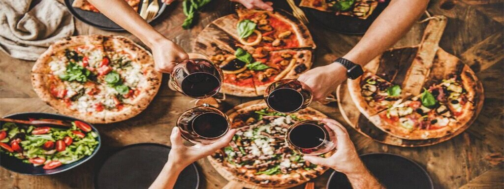
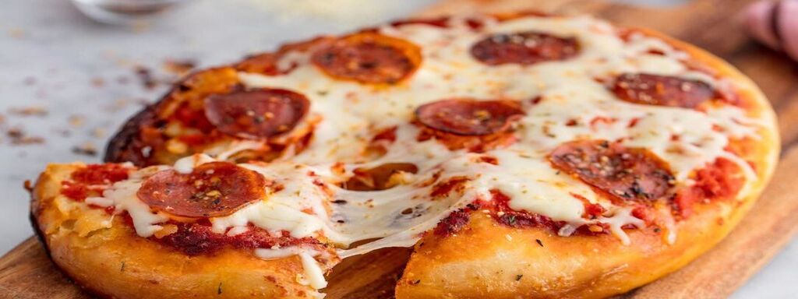
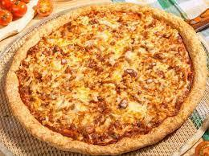
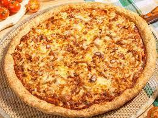

Bienvenidos a Los Cuñados
¡Un poco de lo que podes encontrar!

 

¡Un poco de Nuestra Historia!
Los Cuñados
Sobre Nosotros
Los Cuñados, tradicional Pizzería de Quilmes, fue fundada en 2021. La casa ofrece una gran variedad de pizzas a la piedra,elaboradas en el momento en horno a leña, fainá y papas fritas. Algunas de las especialidades de la casa son la Farineta: pizza rellena con cebollas, rodajas de tomate, jamón y muzzarella y la Veneciana: cebolla, jamón, rodajas de tomate y huevo duro.
Más sobre Nosotros